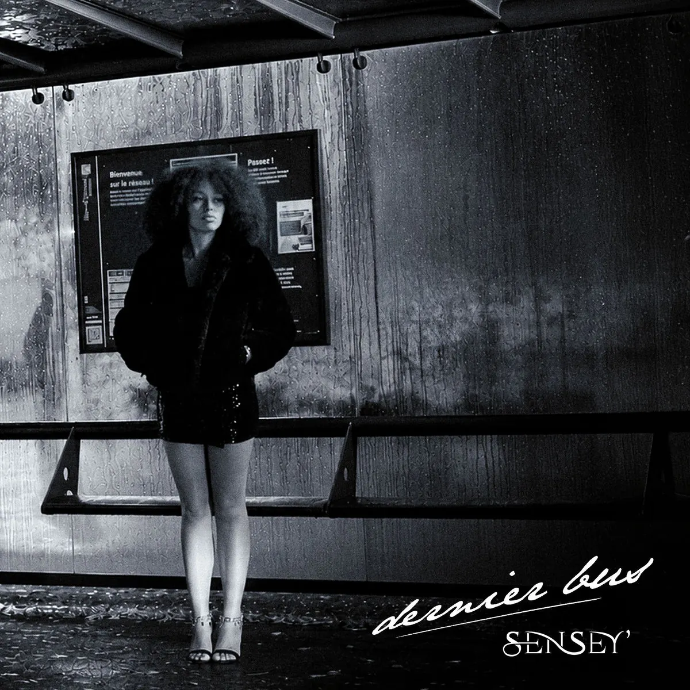

Publié le 15 novembre 2026

SenSey' a sorti le single Dernier Bus le 13 novembre 2026. L'artiste originaire de Melun enchaîne avec ce nouveau titre mélancolique deux mois après son projet estival Summer Love.
Que propose SenSey' dans le single Dernier Bus ?
Le single Dernier Bus prolonge le style R&B et rap mélodique développé par SenSey' depuis plusieurs années. L'artiste y traite des regrets amoureux et de la solitude nocturne sur une production épurée.
Selon la page officielle du morceau sur Apple Music, le titre est disponible depuis le 13 novembre 2026. SenSey' accompagne la sortie d'un court-métrage vidéo intitulé LAST BUS sur sa chaîne YouTube. La réalisation met en scène des déplacements nocturnes en ville pour appuyer le propos des paroles.
Le morceau s'appuie sur un refrain chanté et une batterie au tempo modéré. L'interprétation vocale privilégie une diction claire sans excès d'effets. L'ensemble conserve une tonalité intimiste centrée sur les thèmes du départ et de la rupture.
Comment Dernier Bus s'inscrit-il dans le parcours de SenSey' ?
Dernier Bus intervient peu après l'EP Summer Love sorti à la fin du mois d'août 2026. Cette suite rapide montre la volonté de l'artiste de maintenir une présence constante sur les plateformes de streaming.
L'artiste originaire de Melun continue de poser les bases d'un R&B francophone teinté d'influences pop et afrobeats. Son succès marquant avec le titre Honey Damoiseau avait établi son identité auprès d'un large public. Avec cette nouvelle sortie, il s'éloigne des ambiances ensoleillées de l'été pour revenir à des sonorités plus denses.
Le morceau montre une constance dans les thèmes abordés sans chercher de rupture brutale avec ses précédents travaux. La formule reste axée sur la mélodie narrative et le récit de relations sentimentales complexes.
Comment l'artiste construit-il son identité musicale ?
L'esthétique de SenSey' repose sur un mélange d'influences variées. Il associe la sensibilité du R&B classique aux rythmiques modernes du rap francophone. Les textes mettent en scène les déceptions amoureuses, les doutes personnels et la recherche de stabilité.
Cette approche séduit une audience fidèle sur les réseaux sociaux et les plateformes d'écoute. Son travail visuel participe également à la cohérence de son projet artistique. Chaque clip apporte un univers esthétique précis qui prolonge l'histoire racontée dans les paroles.
Les sorties récentes de SenSey' en 2026
Le tableau ci-dessous récapitule les principales parutions de l'artiste au cours des derniers mois de l'année 2026.
| Projet | Type | Mois de sortie |
|---|---|---|
| Trop de love | Single | Juillet 2026 |
| Summer Love | EP (7 titres) | Août 2026 |
| Dernier Bus | Single | Novembre 2026 |
SenSey' poursuit ainsi un travail régulier en alternant les projets courts et les morceaux isolés. Ce rythme de publication permet à l'artiste d'explorer des atmosphères variées sans imposer de longue attente entre deux projets.